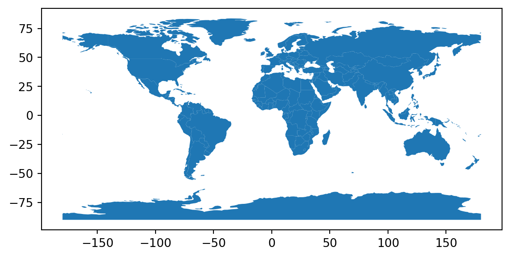
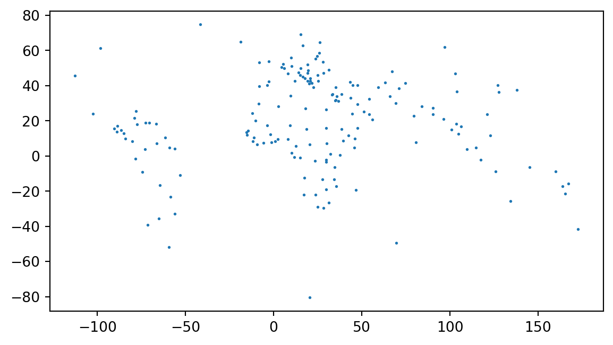
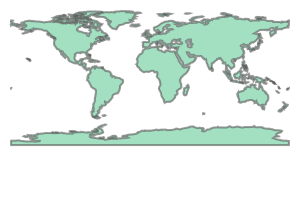
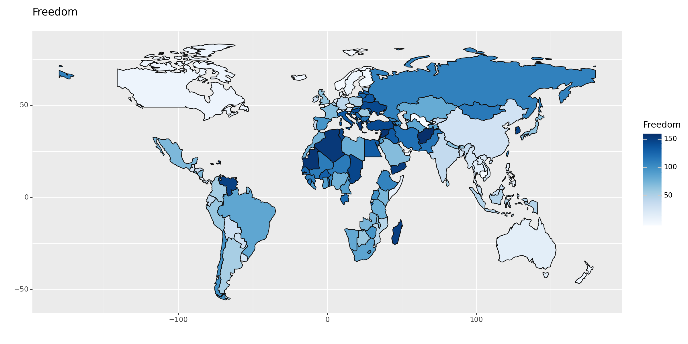
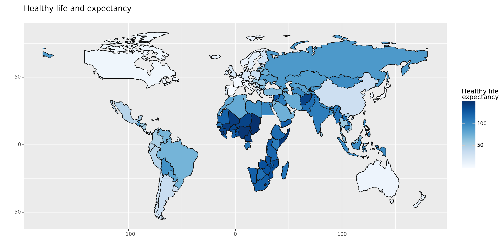

import geopandas as gpd
import folium
import pandas as pdSpatial Visualization with Python
Loading packages
Reading spatial data
world = gpd.read_file(gpd.datasets.get_path("naturalearth_lowres"))
print("Geometry Column Name:", world.geometry.name)
print("Dataset Size:", world.shape)
world.head()
world.plot()
world.geometry.head()Geometry Column Name: geometry
Dataset Size: (177, 6)C:\Users\DELL\AppData\Local\Temp\ipykernel_41412\541073294.py:1: FutureWarning:
The geopandas.dataset module is deprecated and will be removed in GeoPandas 1.0. You can get the original 'naturalearth_lowres' data from https://www.naturalearthdata.com/downloads/110m-cultural-vectors/.
0 MULTIPOLYGON (((180.00000 -16.06713, 180.00000...
1 POLYGON ((33.90371 -0.95000, 34.07262 -1.05982...
2 POLYGON ((-8.66559 27.65643, -8.66512 27.58948...
3 MULTIPOLYGON (((-122.84000 49.00000, -122.9742...
4 MULTIPOLYGON (((-122.84000 49.00000, -120.0000...
Name: geometry, dtype: geometry
world.crs.name'WGS 84'Centroid
world["geometry"].centroid.head() # method 1C:\Users\DELL\AppData\Local\Temp\ipykernel_41412\3721365273.py:1: UserWarning:
Geometry is in a geographic CRS. Results from 'centroid' are likely incorrect. Use 'GeoSeries.to_crs()' to re-project geometries to a projected CRS before this operation.
0 POINT (163.85316 -17.31631)
1 POINT (34.75299 -6.25773)
2 POINT (-12.13783 24.29117)
3 POINT (-98.14238 61.46908)
4 POINT (-112.59944 45.70563)
dtype: geometryworld.centroid.plot(markersize=1) # method 2C:\Users\DELL\AppData\Local\Temp\ipykernel_41412\2075499188.py:1: UserWarning:
Geometry is in a geographic CRS. Results from 'centroid' are likely incorrect. Use 'GeoSeries.to_crs()' to re-project geometries to a projected CRS before this operation.

unary union operation
combined_geometry = world.unary_union
combined_geometry
Bounding polygon
world.envelope.head()0 POLYGON ((-180.00000 -18.28799, 180.00000 -18....
1 POLYGON ((29.34000 -11.72094, 40.31659 -11.720...
2 POLYGON ((-17.06342 20.99975, -8.66512 20.9997...
3 POLYGON ((-140.99778 41.67511, -52.64810 41.67...
4 POLYGON ((-171.79111 18.91619, -66.96466 18.91...
dtype: geometryRead GeoJson file
us_states_geo = gpd.read_file("datasets/us-states.json")
us_states_geo.head()| id | name | geometry | |
|---|---|---|---|
| 0 | 01 | Alabama | POLYGON ((-87.35930 35.00118, -85.60667 34.984... |
| 1 | 02 | Alaska | MULTIPOLYGON (((-131.60202 55.11798, -131.5691... |
| 2 | 04 | Arizona | POLYGON ((-109.04250 37.00026, -109.04798 31.3... |
| 3 | 05 | Arkansas | POLYGON ((-94.47384 36.50186, -90.15254 36.496... |
| 4 | 06 | California | POLYGON ((-123.23326 42.00619, -122.37885 42.0... |
Read .csv file
world_happiness = pd.read_csv("datasets/world-happiness-report-2019.csv")
world_happiness.head()| Country (region) | Ladder | SD of Ladder | Positive affect | Negative affect | Social support | Freedom | Corruption | Generosity | Log of GDP\nper capita | Healthy life\nexpectancy | |
|---|---|---|---|---|---|---|---|---|---|---|---|
| 0 | Finland | 1 | 4 | 41.0 | 10.0 | 2.0 | 5.0 | 4.0 | 47.0 | 22.0 | 27.0 |
| 1 | Denmark | 2 | 13 | 24.0 | 26.0 | 4.0 | 6.0 | 3.0 | 22.0 | 14.0 | 23.0 |
| 2 | Norway | 3 | 8 | 16.0 | 29.0 | 3.0 | 3.0 | 8.0 | 11.0 | 7.0 | 12.0 |
| 3 | Iceland | 4 | 9 | 3.0 | 3.0 | 1.0 | 7.0 | 45.0 | 3.0 | 15.0 | 13.0 |
| 4 | Netherlands | 5 | 1 | 12.0 | 25.0 | 15.0 | 19.0 | 12.0 | 7.0 | 12.0 | 18.0 |
Merge data files
world_total_data = world.merge(world_happiness, left_on = "name",
right_on = "Country (region)")
world_total_data.head()| pop_est | continent | name | iso_a3 | gdp_md_est | geometry | Country (region) | Ladder | SD of Ladder | Positive affect | Negative affect | Social support | Freedom | Corruption | Generosity | Log of GDP\nper capita | Healthy life\nexpectancy | |
|---|---|---|---|---|---|---|---|---|---|---|---|---|---|---|---|---|---|
| 0 | 58005463.0 | Africa | Tanzania | TZA | 63177 | POLYGON ((33.90371 -0.95000, 34.07262 -1.05982... | Tanzania | 153 | 122 | 78.0 | 50.0 | 131.0 | 78.0 | 34.0 | 49.0 | 125.0 | 118.0 |
| 1 | 37589262.0 | North America | Canada | CAN | 1736425 | MULTIPOLYGON (((-122.84000 49.00000, -122.9742... | Canada | 9 | 23 | 18.0 | 49.0 | 20.0 | 9.0 | 11.0 | 14.0 | 19.0 | 8.0 |
| 2 | 18513930.0 | Asia | Kazakhstan | KAZ | 181665 | POLYGON ((87.35997 49.21498, 86.59878 48.54918... | Kazakhstan | 60 | 40 | 81.0 | 5.0 | 19.0 | 80.0 | 57.0 | 57.0 | 47.0 | 88.0 |
| 3 | 33580650.0 | Asia | Uzbekistan | UZB | 57921 | POLYGON ((55.96819 41.30864, 55.92892 44.99586... | Uzbekistan | 41 | 99 | 19.0 | 15.0 | 11.0 | 1.0 | 18.0 | 29.0 | 104.0 | 83.0 |
| 4 | 270625568.0 | Asia | Indonesia | IDN | 1119190 | MULTIPOLYGON (((141.00021 -2.60015, 141.01706 ... | Indonesia | 92 | 108 | 9.0 | 104.0 | 94.0 | 48.0 | 129.0 | 2.0 | 83.0 | 98.0 |
Choropleth Map
from plotnine import ggplot, geom_map, aes, scale_fill_cmap, theme, labs
chart = ggplot(world_total_data) + \
geom_map(aes(fill="Freedom", map_id="name", geometry="geometry")) + \
scale_fill_cmap(cmap_name="Blues") + \
labs(title="Freedom") + \
theme(figure_size=(12, 6))
print(chart)
chart = ggplot(world_total_data) + \
geom_map(aes(fill="Healthy life\nexpectancy", map_id="name", geometry="geometry")) + \
scale_fill_cmap(cmap_name="Blues") + \
labs(title="Healthy life and expectancy") + \
theme(figure_size=(12, 6))
print(chart)
Reading
https://pythongis.org/part2/chapter-06/nb/01-geodataframe.html